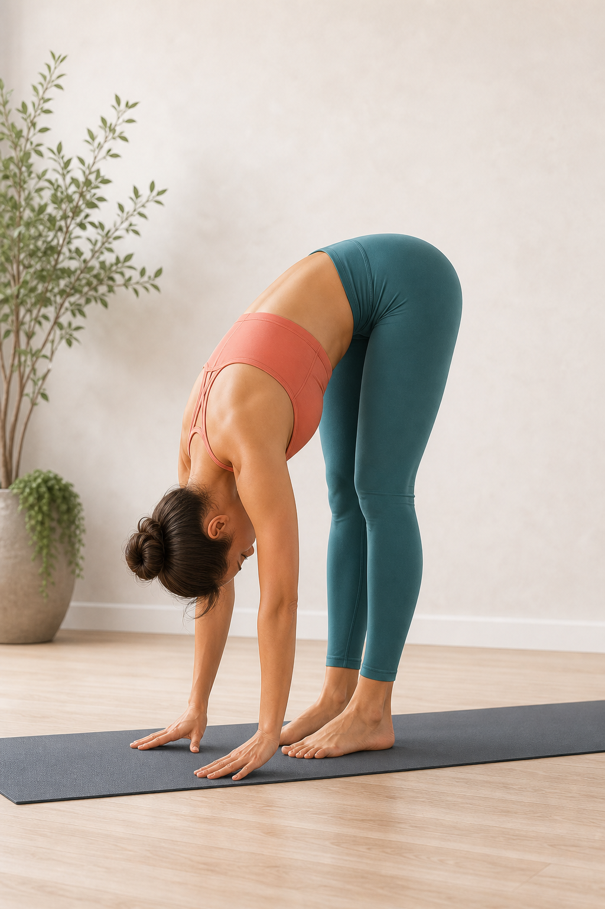
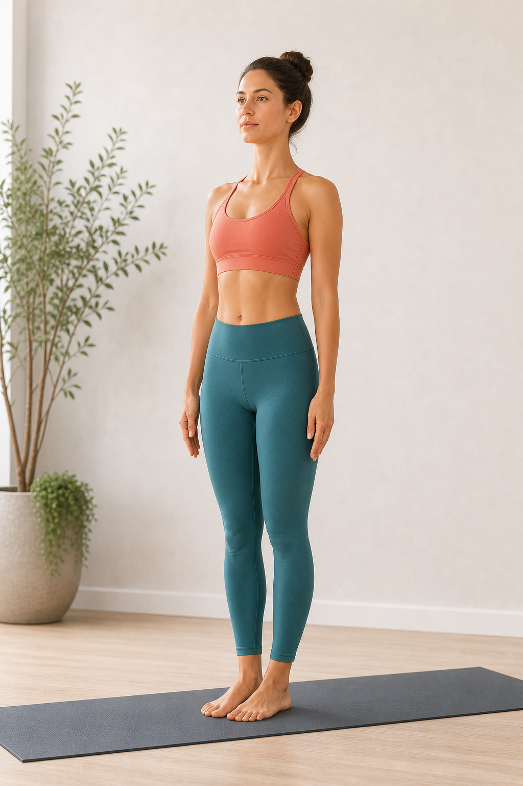

站立体式 · 前屈 · 腿后侧伸展
2，站立前屈 Uttanasana
站立前屈的核心不是“手一定要碰到地”，而是从髋部折叠，让脚掌稳定、腿后侧逐步延展、脊柱和后颈自然释放。它适合作为热身、拜日式过渡、放松腿后侧和安定呼吸的练习。

标准状态
- 双脚可并拢或与髋同宽；初学者建议与髋同宽，脚掌四角均匀压地。
- 折叠来自髋关节，坐骨向上，腹部尽量靠近大腿。
- 膝盖可以微屈；只有在腰背不被拉扯、呼吸稳定时，再逐步伸直双腿。
- 脊柱自然延展后释放，后颈放松，头顶朝向地面，不主动抬头看前方。
- 双手落在地面、瑜伽砖、脚踝或小腿上都可以，以保持呼吸和腰背舒适为准。
- 重心落在脚掌中部，脚跟不虚浮，脚趾不抓地。
做对与做错的常见感觉
做对时通常会感觉到
- 腿后侧有均匀、可呼吸的拉伸感，强度大约在 5-7 分，不是尖锐疼痛。
- 腹部靠近大腿后，腰背像被轻轻拉长，而不是下腰被硬拽住。
- 脚掌踩得稳，重心在脚掌中部，脚跟不飘，脚趾不需要用力抓地。
- 肩颈和头部能自然下沉，呼吸能慢下来，脸和下颌不紧绷。
- 保持几轮呼吸后，身体可能一点点变软，前屈深度自然增加。
做错或过度时常见感觉
- 腰部酸胀、被拉扯或顶住，尤其是下腰比腿后侧更明显。
- 膝盖后侧有尖锐拉痛，或为了伸直腿而把膝盖锁死、向后顶。
- 手拼命够地，肩膀耸起，脖子用力，呼吸变短或憋气。
- 脚趾抓地、脚跟变轻，身体像要向前倒，重心不稳定。
- 出现麻、刺、电流感、放射到臀腿的感觉，或起身时头晕明显。
动作要点
1. 先找脚，再找髋
脚掌稳定是前屈的底座。轻轻压实大脚趾根、小脚趾根和脚跟两侧，再让髋部向后、坐骨向上。
2. 用屈膝保护腰背
腿后侧紧时，屈膝反而更接近正确练习：腹部能贴近大腿，腰椎不需要硬撑成弓形。
3. 呼气时深入，吸气时拉长
每次吸气感觉脊柱有空间，每次呼气让肩颈、后背和腿后侧慢慢放松。
进入与退出
- 从山式站立开始，双脚踩稳，膝盖朝向脚尖，吸气让胸腔和脊柱向上延展。
- 呼气，微屈膝，从髋部向前折叠，让腹部先靠近大腿，而不是先追求手碰地。
- 双手放到瑜伽砖、地面、脚踝或小腿；吸气进入半前屈，背部拉长。
- 再次呼气，回到前屈，放松头颈，保持 5-8 轮平稳呼吸。
- 退出时屈膝，核心轻轻向内收，手扶髋或保持脊柱延展，慢慢回到站立。
如何逐步达到标准状态
阶段一：先稳定
脚与髋同宽，膝盖明显弯曲，手放高砖。目标是腹部贴大腿、腰背无拉扯、呼吸不断。
阶段二：练屈髋
在半前屈和前屈之间来回 5-8 次，感受髋部折叠，背部先变长，再慢慢释放。
阶段三：降低支撑
把瑜伽砖从高位调到中位或低位。若腰背仍舒适，再一点点伸直膝盖。
阶段四：深入保持
手可落地或扶脚踝，重心微微向前到脚掌中部，坐骨上提，头颈完全放松。
常见问题
摸不到地怎么办？
用瑜伽砖或椅子垫高双手。前屈的进步标准是髋部折叠更清晰、呼吸更顺，不是手的位置更低。
腰酸或腰被拽住？
立刻屈膝，让腹部贴近大腿，减少背部被动拉扯。若出现刺痛、麻木或放射感，停止练习。
膝盖需要完全伸直吗？
不需要强求。腿后侧逐渐打开后，膝盖会自然更接近伸直；锁死膝盖反而容易让腰和膝承压。
5-10 分钟练习流程
- 热身 2 分钟：猫牛式、下犬式或站立半前屈，唤醒脊柱和腿后侧。
- 动态进入 1-2 分钟：半前屈和前屈交替 5-8 次。
- 主练 3 轮：每轮保持 5-8 次呼吸，中间回到半前屈。
- 放松 1 分钟：屈膝悬垂，观察后背、腿后侧和呼吸的变化。
安全提醒
练习中以“可呼吸、无疼痛、可退出”为准。 如果有急性腰背伤、椎间盘问题、坐骨神经痛、腿后侧拉伤、眩晕、青光眼、眼压问题、血压控制不稳定，或正在孕期，请先咨询专业老师或医生，并使用椅子、墙面或瑜伽砖降低强度。
站立体式 · 根基 · 中立站姿
1，山式站立 Tadasana
山式看起来像“只是站着”，其实是在练习脚掌根基、骨盆中立、脊柱向上延展和呼吸稳定。它是许多站立体式的起点，也适合用来校准日常站姿。

标准状态
- 双脚可并拢或与髋同宽；初学者建议与髋同宽，脚趾自然朝前。
- 脚掌四角均匀压地，足弓轻轻上提，脚趾舒展但不抓地。
- 膝盖朝向第二脚趾，双腿有向上的力量，但膝盖不向后锁死。
- 骨盆保持中立，尾骨自然向下，前侧肋骨不过度外翻。
- 脊柱向上延展，胸腔打开，肩膀放松下沉，不夹肩、不耸肩。
- 下巴微收，后颈变长，头顶向上，目光平视前方。
做对与做错的常见感觉
做对时通常会感觉到
- 脚掌稳稳贴地，重量平均分布，不会明显偏向脚跟或脚趾。
- 腿部有轻微向上收束的力量，但膝盖和大腿前侧不僵硬。
- 下背部有空间，骨盆像被稳定托住，而不是刻意夹臀或塌腰。
- 胸腔自然开阔，肩颈轻松，手臂能自然垂在身体两侧。
- 呼吸顺畅，站着时有“向下扎根、向上长高”的稳定感。
做错或过度时常见感觉
- 脚趾抓地、足弓塌陷，或重心明显压在脚跟、脚外侧。
- 膝盖向后顶住，腿前侧紧绷，站久后膝盖后侧不舒服。
- 腰眼被挤压、肋骨向前翘，像在用塌腰换取“挺胸”。
- 肩膀耸起或向后硬夹，脖子紧，下巴抬高，呼吸变浅。
- 身体左右摇晃明显，或闭眼后立刻失去平衡。
动作要点
1. 脚掌先扎根
感受大脚趾根、小脚趾根和脚跟两侧均匀压地，让足弓有轻轻提起的弹性。
2. 腿有力量，但关节不锁死
膝盖朝向脚尖，大腿轻轻向上收；保持膝盖微微有弹性，避免向后顶。
3. 骨盆和肋骨回到中立
尾骨自然向下，前侧肋骨轻轻收回，胸腔不是硬挺，而是在稳定中打开。
进入与保持
- 双脚站稳，可并拢或与髋同宽，先让脚趾抬起再轻轻放回地面。
- 把身体重量在脚掌前后左右微调，找到脚掌中部最稳定的位置。
- 膝盖保持柔软，大腿轻轻上提，骨盆回到中立，尾骨自然向下。
- 吸气让脊柱变长，呼气放松肩膀和下颌，手臂自然垂放。
- 保持 5-10 轮呼吸，观察脚掌、骨盆、胸腔和头顶是否在同一条中轴上。
如何逐步达到标准状态
阶段一：靠墙找线
背靠墙站立，感受后脑、上背、骨盆附近的相对位置；不需要把每一处都硬贴墙。
阶段二：练脚掌觉察
轻轻前后左右移动重心，再回到脚掌中部。目标是脚趾放松、足弓有弹性。
阶段三：建立中轴
吸气头顶向上，呼气脚掌向下扎根。让身体不是僵直，而是上下都有方向。
阶段四：融入练习
在前屈、战士式、树式前后回到山式，用它检查左右重量和呼吸是否恢复稳定。
常见问题
双脚一定要并拢吗？
不一定。若并拢会让你不稳、膝盖内扣或骨盆紧张，先双脚与髋同宽更合适。
为什么站着反而腰酸？
多半是肋骨外翻、骨盆前倾或膝盖锁死。先微屈膝，尾骨自然向下，前侧肋骨轻轻收回。
山式需要用力收腹吗？
不需要憋住肚子。可以轻轻感受下腹向内上方有支撑，但呼吸仍然能流动。
3-5 分钟练习流程
- 脚掌觉察 1 分钟：脚趾抬起放下，找到脚掌四角压地。
- 重心校准 1 分钟：身体前后左右小幅移动，再回到中心。
- 中轴呼吸 1-2 分钟：吸气向上延展，呼气向下扎根。
- 整合 1 分钟：放松肩颈和下颌，保持目光平稳，观察站姿是否省力。
安全提醒
山式的稳定感来自清醒的放松，不是把身体站僵。 如果练习时头晕、膝盖不适、腰部压迫或平衡困难，请把双脚打开到与髋同宽，保持眼睛睁开，必要时靠墙练习。若有持续疼痛或眩晕，请停止并咨询专业人士。